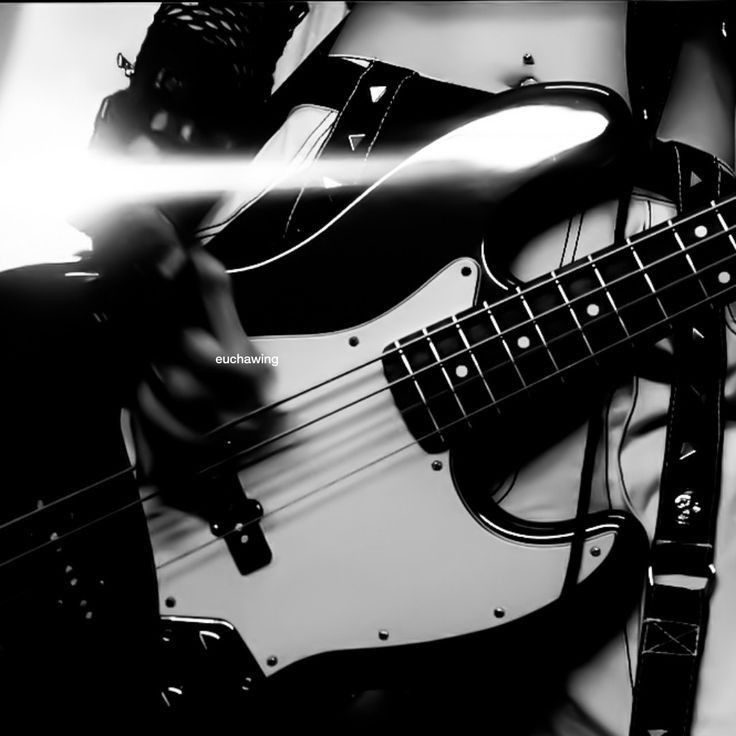
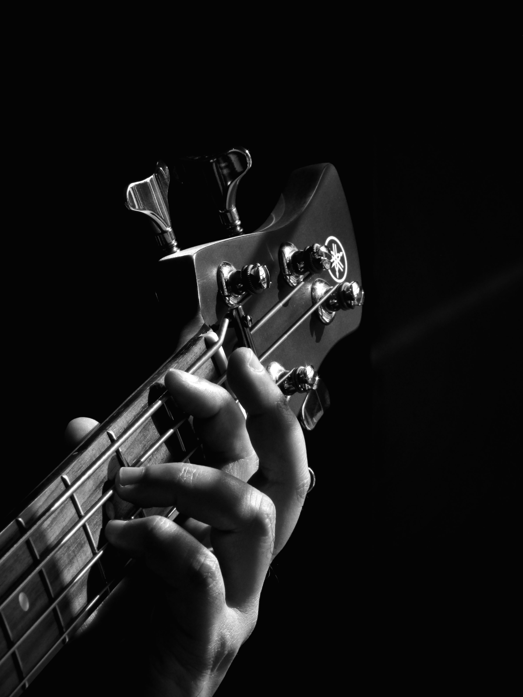
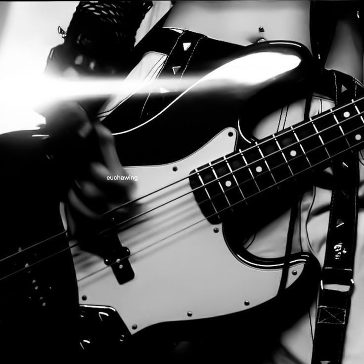
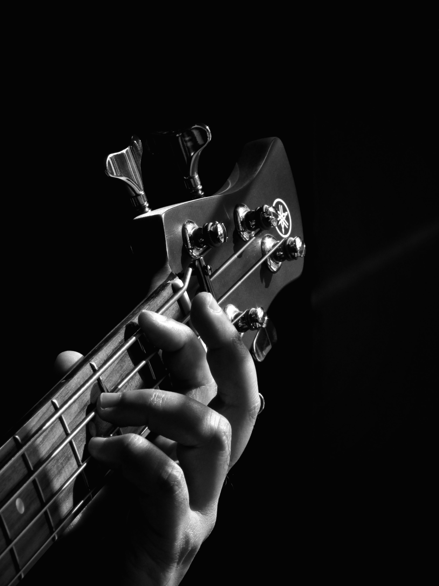

My Favorite Bass Lines to Play
By Lily Dunham
I've been playing the bass guitar for a couple years now and I've played the electric
and acoustic guitar for around 7 years. Anyways, here's my go-to bass lines and why they're my faves.

Starting off strong is Attention by Charlie Puth. It's really fun to play and it one that other people like a lot.
Here is a clip of this bass line that I found on Youtube.
Next up is Teeth by 5 Seconds of Summer and it's pretty simple but it's still kind of fun.
Here is a clip of this bass line that I found on Youtube.
I also love the Kissing Strangers bass line from DNCE ft. Nicki Minaj
because I love her as a feature and I love this song and I love how the bass line goes in with this song.
Here is a clip of this bass line that I found on Youtube.
 


